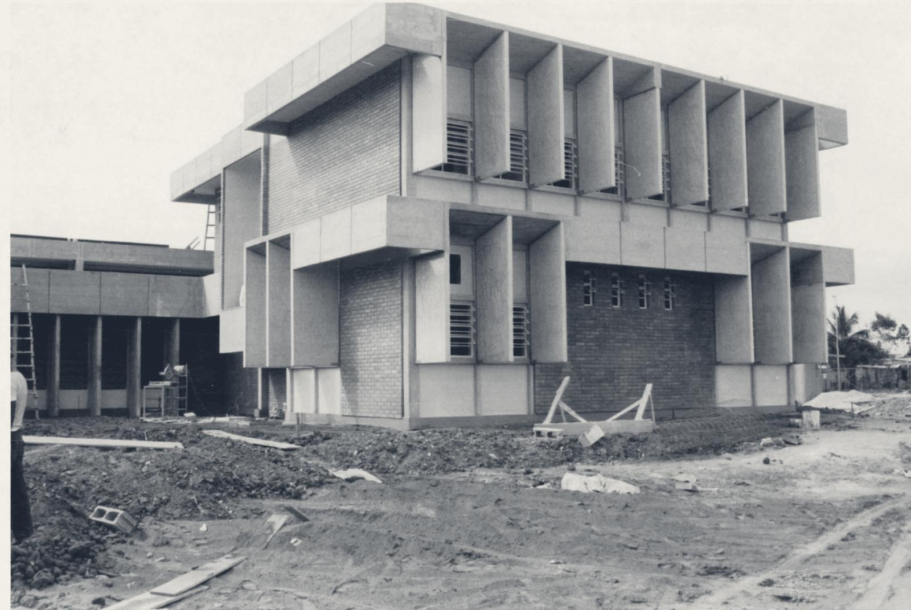
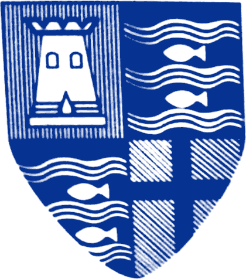
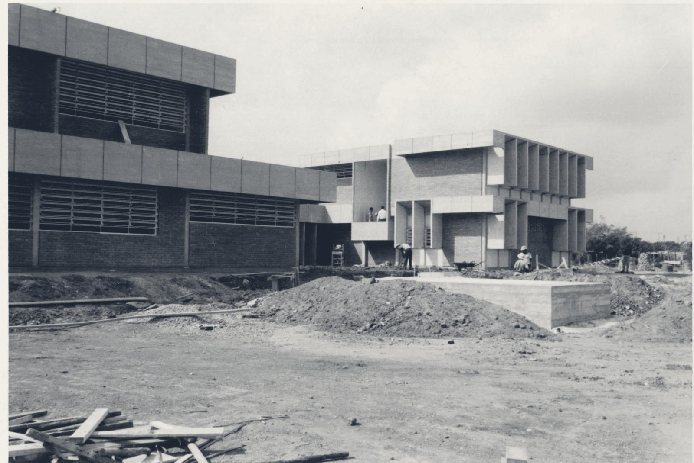
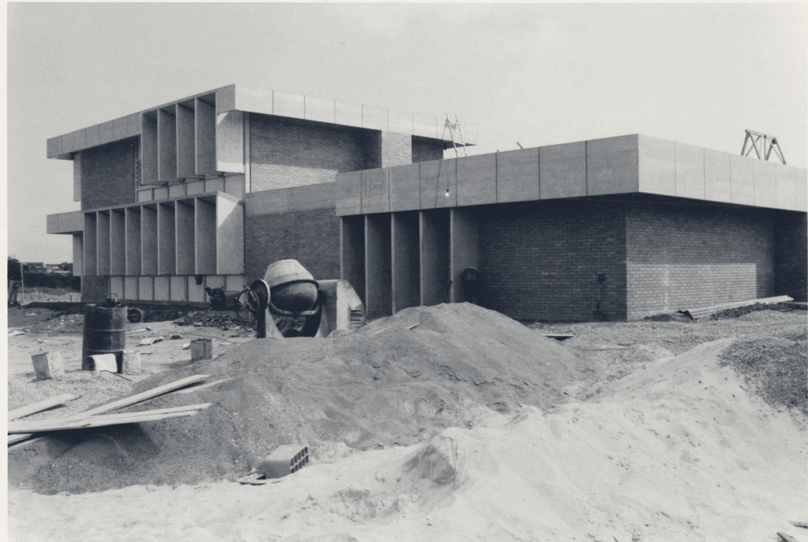
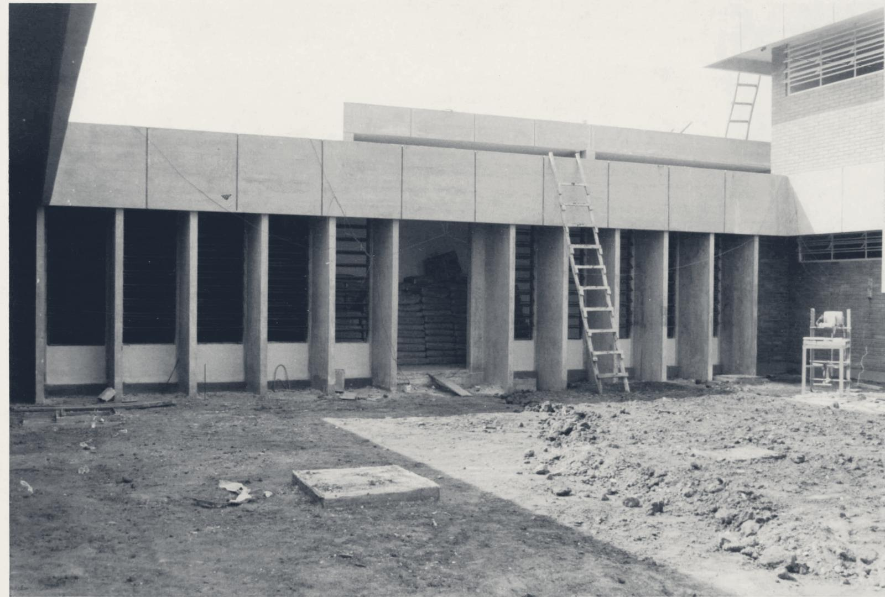

Estudio y orientación
Salas de estudio, técnicas y hábitos de trabajo, preparación de exámenes y orientación para elegir carrera. El estudio bien hecho es el centro de la formación de un estudiante.
Desde hace más de seis décadas, Pozoviejo acompaña a estudiantes universitarios y de bachillerato en su estudio, su carácter, su amistad y su fe.

El Centro Cultural Pozoviejo es un espacio de formación para jóvenes de Maracaibo. Aquí estudian, conversan, hacen deporte, sirven a quienes lo necesitan y encuentran amigos con los que comparten ideales.
Nuestro propósito es complementar la educación que los jóvenes reciben en su familia, en el colegio y en la universidad. Queremos ayudar a cada uno a desarrollar sus talentos, a trabajar bien y con sentido, y a poner su preparación al servicio de los demás.
Pozoviejo es una iniciativa de la Asociación Venezolana de Fomento Cultural, una asociación civil sin fines de lucro fundada en 1958 para promover actividades educativas y culturales dirigidas a la juventud.

Más que un edificio, Pozoviejo es una tradición de amistad y de trabajo bien hecho que pasa de una generación de estudiantes a la siguiente.
Las actividades se adaptan a la edad de cada grupo. Todas buscan lo mismo: que cada joven aproveche su tiempo con sentido y crezca como persona.
Salas de estudio, técnicas y hábitos de trabajo, preparación de exámenes y orientación para elegir carrera. El estudio bien hecho es el centro de la formación de un estudiante.
Charlas y círculos sobre el carácter, la amistad, la responsabilidad y el uso de la libertad. Cada joven puede contar con un preceptor que lo acompaña personalmente.
Tertulias, cineforos, fomento de la lectura, conversaciones con profesionales y visitas culturales para conocer mejor la historia y la realidad del Zulia y de Venezuela.
Fútbol, básquet y otros deportes en un ambiente sano. El deporte enseña compañerismo, constancia y afán de superación.
Campamentos de trabajo, visitas a familias necesitadas y jornadas de ayuda en comunidades del estado Zulia. Aprender a servir es parte de formarse.
Fines de semana y temporadas de vacaciones para convivir, descansar, conocer la naturaleza y profundizar en la amistad.
Encuentros abiertos sobre temas de actualidad con especialistas, como el ciclo sobre la dignidad de la persona humana en tiempos de inteligencia artificial.
Formación y encuentros para padres de familia: presentaciones de libros, charlas y conversaciones sobre la educación de los hijos.
Campaña anual de Navidad para reunir juguetes, alimentos y útiles deportivos para los niños del municipio Mara, junto con colegios amigos de Maracaibo.
Visitas a los abuelos del Hogar San Vicente de Paúl y otras actividades de servicio en la ciudad.
Para fomentar la lectura: cualquiera puede donar un libro o encontrar buenas lecturas a buen precio.
Las fechas de cada actividad se anuncian en nuestro Instagram, @pozoviejocc.
La atención espiritual y las actividades de formación cristiana de Pozoviejo están confiadas a la Prelatura del Opus Dei.
Su mensaje es sencillo: el estudio, el trabajo, la familia y la amistad pueden ser camino de encuentro con Dios. Por eso ofrecemos clases de doctrina cristiana, meditaciones, retiros espirituales y la posibilidad de conversar con un sacerdote.
La participación en estas actividades es siempre libre. Pozoviejo está abierto a todos los jóvenes que quieran formarse, con pleno respeto a la conciencia y a la libertad de cada uno y de sus familias.
Pozoviejo nació del empeño de profesores, profesionales y familias zulianas que querían ofrecer a los estudiantes un lugar de formación junto a la universidad.
Se constituye en Caracas la Asociación Venezolana de Fomento Cultural, dedicada a promover actividades educativas y culturales para la juventud.
En la avenida Baralt de Maracaibo comienzan los cursos para universitarios: técnicas de estudio, orientación profesional, ética profesional y formación cristiana.
Profesores de la Universidad del Zulia y profesionales de la ciudad forman un comité promotor para dar a la labor una sede propia.
La Fundación Shell de Venezuela dona un terreno cerca de la Ciudad Universitaria. En noviembre comienzan las obras, sostenidas por el aporte de empresas y familias del Zulia.
Concluye la primera etapa: biblioteca, salas de estudio, aulas, oratorio y canchas deportivas.
Unos sesenta jóvenes de Pozoviejo reúnen tres toneladas de alimentos, juguetes y medicinas para familias del municipio Mara. La campaña se repite cada Navidad.
Miles de jóvenes han pasado por Pozoviejo. Muchos de ellos son hoy profesionales y padres de familia en el Zulia y en toda Venezuela.
El edificio, de concreto y ladrillo, se diseñó con grandes parasoles verticales para proteger del sol de Maracaibo las salas de estudio. Sus líneas siguen siendo la imagen de Pozoviejo.
La obra se llevó adelante gracias a la generosidad de la sociedad zuliana: empresas, comercios y familias aportaron dinero y materiales de construcción.



Los padres son los primeros educadores de sus hijos. Pozoviejo quiere ayudarles y mantenerse en contacto con ellos.
Jóvenes varones de bachillerato y estudiantes universitarios. Las actividades se organizan por edades.
Lo mejor es visitarnos y conversar con el director. Te explicaremos las actividades del año y cómo puede participar.
No. Pozoviejo está abierto a todos. La formación cristiana se ofrece con libertad y respeto a la conciencia de cada uno.
Sí. Con Padres+ organizamos encuentros, charlas y presentaciones de libros pensados para las familias.
Con el aporte de las familias y de amigos y cooperadores que creen en la formación de los jóvenes.
Las puertas de Pozoviejo están abiertas. Escríbenos y con gusto te atendemos.
Avenida Universidad (calle 61), junto al Círculo Militar
Parroquia Coquivacoa, Maracaibo, estado Zulia
Escríbenos por mensaje directo en Instagram